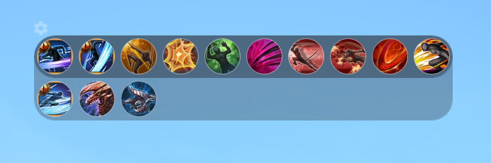

Mods
Mods
Sert à changer tout l'interface du jeu, mais aussi à reduire la charge de calcule du jeu sur le processeur, parce que oui le TCC utilise la carte graphique pour tourner se qui le rend bien plus fluide et lisible.
Le Tera Custom Cooldown "TCC" supprime tout votre interface de base du jeu pour réduire le calcul et la charge processeur de Tera et rend tout cela externe au jeu
MAIS pour que la plupart des choses fonctionnent avec la TCC comme le " Y " le " Tchat " où d'autre chose vous seraient OBLIGER de lancer le jeu sous proxy ce qui n'est pas vraiment approuvé par la communauté
Vôtre nouvelle barre de sort modifiable
Vôtre nouvelle barre de boss qui vous annoce les enrage
Vôtre nouvelle barre de vie qui vous montre vôtre ilevel et vôtre taux de crit actuel
Vôtre nouvelle barre de compètence utile qui varie entre chaque classe et vous affiche uniquement les sort les plus utiliser de vôtre class ( pour moi là c'est le Guerrier )
Vôtre nouvelle barre de buff / Debuff qui est bien meiux ranger que celui de Tera de base
Vôtre nouvelle recherche de groupe " le Y " qui categorise chaque cjhose les lien twitch " cliquable " en Violet, les WTS / WTB en Rouge et la recherche de base en Blanc
Vôtre nouvelle barre de groupe ranger avec les DPS à gauche Heal au milieu et Tank à droite
Vôtre nouveau Tchat avec les heure d'envoi et de reception des messages, des annocez bien visible pour les négosiation de L'hdv et le tant attendu bouton " inspect " quand quelqu'un postule à vôtre Y et juste le Y au dessus du tchat en temps réeel
Vôtre nouvelle fenêtre d'info de personnage ou vous pourrais tout retrouver sur vous comme vos quête " H " ou vos mission de gardien par perso ou même vôtre xp de stuff ou vos entrée restante ect ect
Mod à installer ici " TERA\Client\S1Game\CookedPC\Art_Data\Packages\_S1UI " si vous n'avais pas le dossier _S1UI il faudras le créer et placer tout les fichier .gpk dans ce dossier
Si le TCC ne fonctionne pas cela peut être dû à 2 choses
1 .Soit votre windows n'est pas à jour
2 .Soit il vous manque Npcap petit utilitaire qui aide le TCC à "mieux" lire les donnés du jeu
3 .Au besoin faite un tour sur ce site Installation de TCC cela pourras vous aidez à mieux comprendre comment l'installer au complet